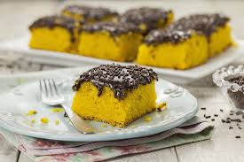

Bolo de Cenoura
postado em 08 de junho de 2024Ingredientes: 3 cenouras médias (250g) 4 ovos meia xícara (chá) de óleo 2 e meia xícaras (chá) de farinha de trigo 2 xícaras (chá) de açúcar 1 colher (sopa) de fermento em pó. Cobertura de Brigadeiro 1 Leite MOÇA (lata ou caixinha) 395g 1 colher (sopa) de manteiga meia xícara (chá) de Chocolate em Pó meia xícara (chá) de chocolate granulado Modo de preparo:Em um liquidificador, bata as cenouras, os ovos e o óleo. Despeje a mistura em um recipiente e misture o açúcar e a farinha de trigo peneirada com o fermento. Coloque em uma fôrma retangular (20 x 30 cm) untada, e leve ao forno médio (180°C), preaquecido, por 40 minutos. Enquanto isso, prepare a cobertura de brigadeiro. Cobertura de Brigadeiro Em uma panela coloque o Leite MOÇA, o Chocolate em Pó DOIS FRADES e a manteiga e leve ao fogo baixo, mexendo sempre, até começar a desprender da panela. Despeje ainda quente sobre o bolo, distribua o chocolate granulado e deixe esfriar.
Leia maisBolo de Cenoura Vulcão
postado em 08 de junho de 2024 4 ovos 1/2 xícara (chá) de óleo 2 1/2 xícaras (chá) de farinha de trigo 2 xícaras (chá) de açúcar 1 colher (sopa) de fermento em pó leite condensado 1 lata de leite condensado 2 colheres (sopa) de chocolate em pó ou 3 de achocolatado 1 colher (sopa) rasa de manteiga 1 caixa de creme de leite Chocolate granulado a gosto Modo de preparo:Bata no liquidificador a cenoura, juntamente com os ovos, açúcar e óleo, até ficar bem misturado e homogêneo. 2 Transfira essa mistura para um pote e vá juntando a farinha peneirada e misturando muito bem. 3 No fim, adicione o fermento em pó. 4 Leve em forno a 180º por aproximadamente 45 minutos. 5 Cobertura Em uma panela coloque o leite condensado com a manteiga e o chocolate em pó (achocolatado), misture tudo e leve ao fogo baixo-médio até que vire um brigadeiro e desgrude do fundo da panela. 6 Tire do fogo e, logo em seguida, acrescente uma caixa de creme de leite e misture muito bem. Deixe descansar até o bolo assar. 7 Desenforme o bolo e coloque a cobertura por cima junto com o granulado de chocolate para decorar.
Leia mais